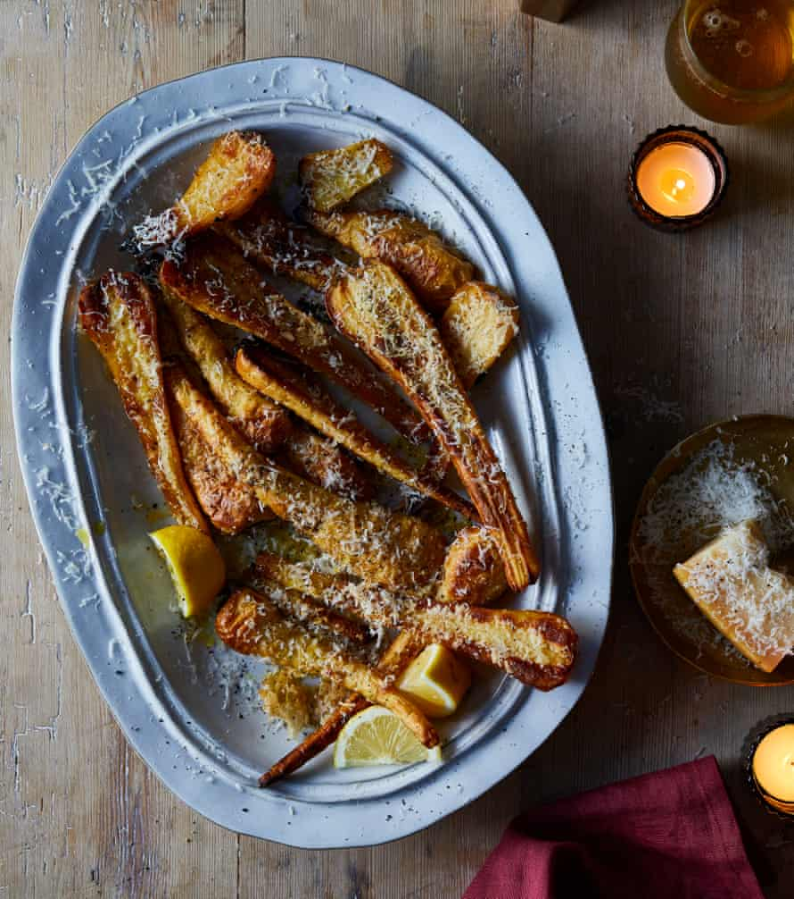

Parmesan and black pepper roast parsnips

These make a very quick and easy side dish to go with a Sunday roast. Serve them as soon after roasting as possible, while they’re still crisp.
Heat the oven to 240C (220C fan)/475F/gas 9. Fill a medium saucepan with a litre and a half of water and bring to a boil. Once boiling, add the parsnips and a tablespoon and a half of salt, and cook for five minutes, until the tip of a small knife easily slides through but the parsnips still hold their shape.
Drain the parsnips, then transfer to a large bowl, add two tablespoons of oil, half a teaspoon of the pepper and all the maple syrup, and toss gently to coat. Transfer to a 30cm x 20cm baking tray and roast for 20 minutes, until lightly golden. Remove, scatter half the grated parmesan on top and return to the oven for five minutes, or until the parmesan is golden brown.
Spoon over the remaining tablespoon of oil, top with a snowy dusting of the remaining parmesan, sprinkle over the last quarter-teaspoon of cracked pepper and serve straight from the tray with the lemon wedges alongside for squeezing over.